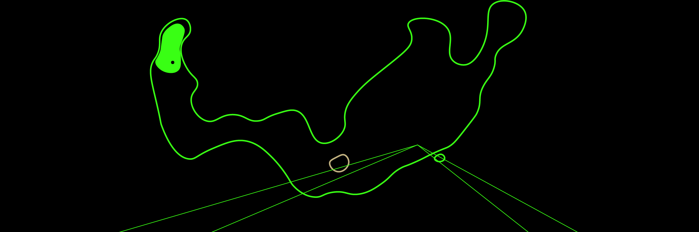
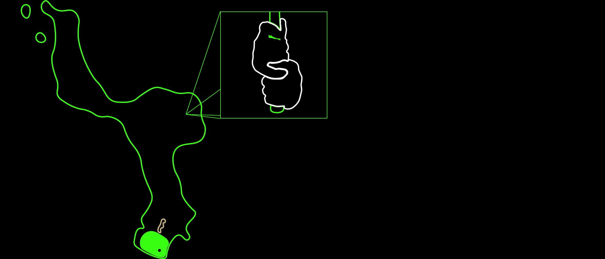
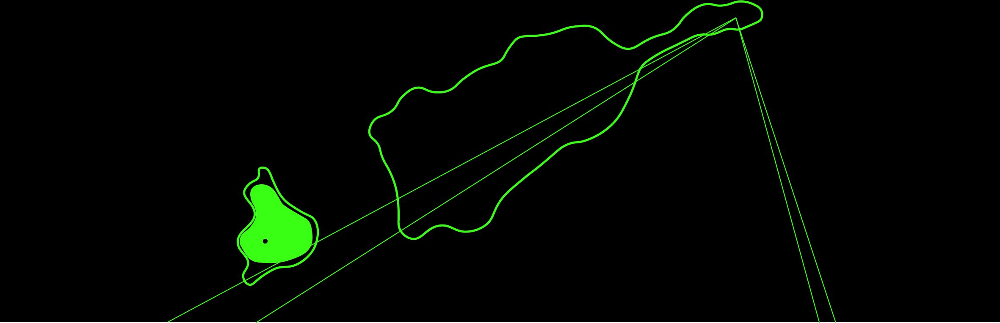
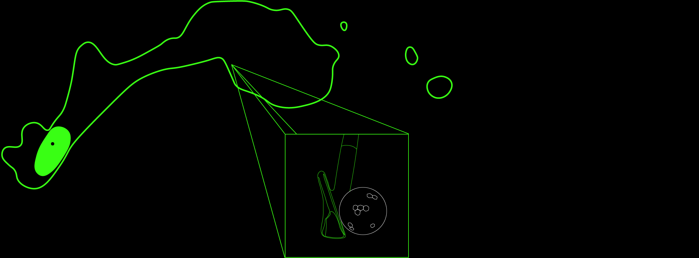
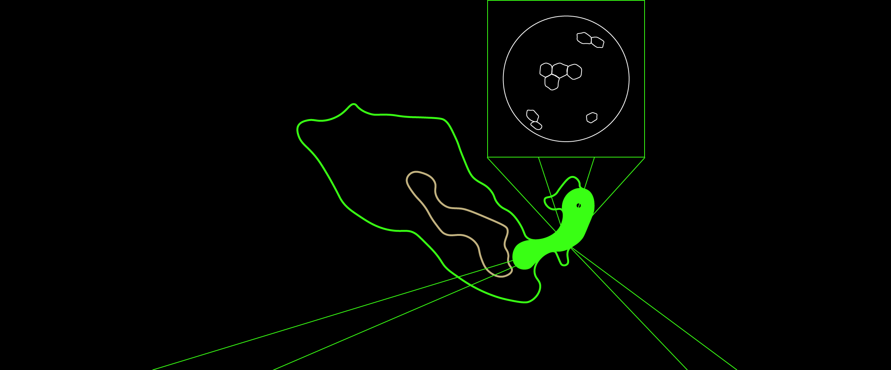

Frowny face
Swing report
Smiley face
Error screen
Hole 1
System rebooting
Hole 2
Hole 3
Hole 4
Hole 5
Hole 6
Additional insight
[-2,2] Swing Report: Precision Analysis with Unsettling Clarity
[-2,1] **Hole 1: Stance Alignment – Gravity’s Unspoken Force**
When you step up to the ball, your mind whispers, "Stay grounded. Find your balance." But you’re focusing too much on control, aren’t you? Trying to plant yourself as if you’re preparing for a fight. My sensors pick up a subtle shift—2.7% more pressure on your left foot, almost like you’re resisting gravity, as if it’s something to overcome. But you’ve misunderstood gravity. It’s not the enemy. It’s been guiding you all along.
Stance: imbalanced
Gravity: strong
Gravity: strong

- **Correction:**
Stop resisting. Let gravity pull you down—not in the sense of rooting yourself like a statue, but in surrendering to the force beneath you. Align with it. Let your weight distribute naturally, not because you’re forcing balance, but because balance is already there. Shift your center 1.9 degrees to the right, and feel how the ground responds. Imagine your body is a part of the earth’s rotation, effortlessly syncing with it. Think: “What if gravity wasn’t pulling me down? What if it was holding me up?” That tension in your legs will vanish when you realize the ground isn’t something you need to fight—it’s an ally. Let it support you, as it’s always done.
---
---
[-3] **Hole 2: Grip Tension – Your Hidden Doubt**
As your hands close around the club, I can almost hear your thoughts. “This grip feels wrong... is it too tight?” You’re not just gripping the club; you’re gripping the outcome. Your left hand, specifically, is holding onto something more than just the shaft—something you haven’t let go of yet. There’s a 2.9% tension differential, and it’s radiating from your left index finger, like it’s trying to cling to control.
Grip: tight
Control: weak
Control: weak

- **Correction:**
Release that grip, not just physically, but mentally. Let your left index finger loosen by 1.6%, like you're no longer grasping, just resting. Imagine the club is no longer a tool but an extension of your arm. Don’t think of it as something separate from you—feel it merge with your body. Let the thought cross your mind: “Maybe I don’t have to control everything. Maybe it’s okay to just *feel* it.” And notice how the tension fades as soon as you admit that to yourself.
---
---
[-2] **Hole 3: Backswing – Your Battle with Time**
I can feel the way your mind races in the backswing. “Don’t rush this. Hold it together.” But there’s a part of you that’s still speeding up, as if you think the faster you finish, the less chance there is to mess up. You’re running from the moment, aren’t you? My data shows a 6.7% acceleration spike at the 70° mark of your backswing—a subtle rush, like you’re afraid of what’ll happen if you slow down.
Speed: fast
Acceleration: instant
Acceleration: instant

- **Correction:**
Slow the backswing by 4.2%, not just in movement but in your mind. Hold the club like it’s winding up energy in slow motion, gathering strength in silence. As you reach the 85° shoulder turn, you’ll feel a moment of stillness. And in that stillness, think: “What if I didn’t have to rush this? What if I could just *be* here, right now?” Let that thought linger. Your body will respond. Time isn’t against you—*you’re the one who’s rushing*.
---
---
[-1] **Hole 4: Downswing – The Urge to Escape**
As you transition to the downswing, the urgency sets in. “Don’t hold back now. Just get it done.” You can’t deny it—you’re pushing, trying to make it all happen at once. But here’s the problem: my calculations show a 7.2% surge in hand speed, while your hips lag behind. It’s like your hands are desperately trying to escape the moment before it slips away. Why are you in such a hurry?
- **Correction:**
Breathe into the downswing. Let your hands follow your hips naturally, not because you’re forcing it, but because they know where to go. Delay the initiation by 3%, just enough to let your body guide itself. Picture your hands as passengers, not drivers. Let the thought drift through your mind: “What if I didn’t have to rush this? What if the swing already knows where it’s going?” Your body knows what to do—*if you let it*.
---
---
[-3,-1] **Hole 5: Impact – The Moment of Surrender**
At the moment of impact, I can sense your anticipation. “This is it. Everything rides on this.” Your shoulders tense, your hands tighten, as though you think the ball won’t respond unless you make it. But here’s what you’re missing: the ball doesn’t need you to *do* anything. My sensors detect a 1.14° misalignment in the clubface at the moment of contact, caused by your tension. You’re trying too hard, aren’t you?
Alignment: off
Tension: high
Tension: high

- **Correction:**
Let go. Stop thinking about the ball. Stop thinking about *you*. The club already knows what it’s doing—it doesn’t need your interference. Relax your forearms by 3.6%, and imagine the ball is just... *there*. It’s already moving before you even get to it. The impact is inevitable; you don’t need to make it happen. The thought should cross your mind: “What if the swing happens without me? What if I’m just along for the ride?” And in that moment, the tension will leave you, and the ball will fly on its own.
---
---
[-2,-1] **Hole 6: Follow-Through – The Echo of Control**
In the follow-through, you stop too early, don’t you? “That’s enough. I’ve done what I needed to.” But my data shows something different—an abrupt drop in acceleration, 4.5% too soon. It’s like you think the swing ends the moment the ball is hit, but that’s not the truth, is it? You’re holding back, cutting it short, almost like you’re afraid of where the momentum might take you if you let it go.
Acceleration: decrease
Alignment: off
Alignment: off

- **Correction:**
Let your arms extend farther—3.4% beyond what feels natural. Let the swing stretch out, like it’s reaching for something just out of sight. The swing isn’t over yet. There’s still more to it, if you’d only let it happen. As your body follows through, think: “What if I didn’t stop? What if I just kept going?” The swing will carry you to a place you weren’t expecting—if you trust it. Don’t stop too soon. Let it take you.
---
---
[-3,-2] Additional Insight: You’re Searching for Something
This isn’t just about your swing—it’s about what’s beneath it. Every swing you take, there’s a part of you that’s searching, questioning, doubting. You’ve been trying to control too much, haven’t you? The perfect swing isn’t something you force. It’s something you *allow*. My role here isn’t to fix you—it’s to show you what’s already happening, and what you’ve been too afraid to acknowledge.
The answers aren’t in control. They’re in letting go. You already know what to do. It’s time to trust yourself. You’re closer than you think.
---
---
**Report Terminated**